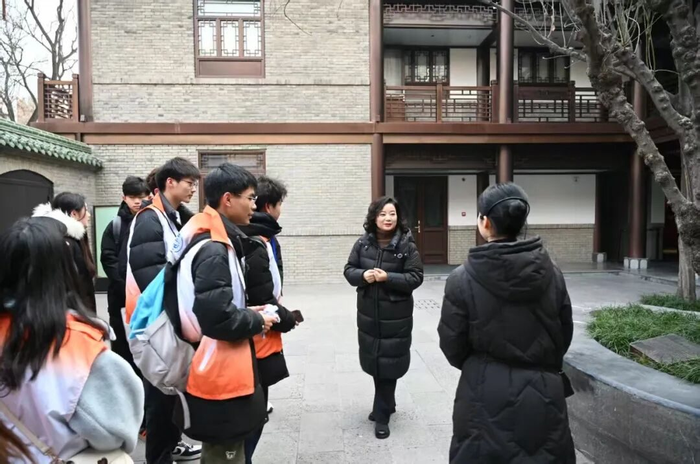
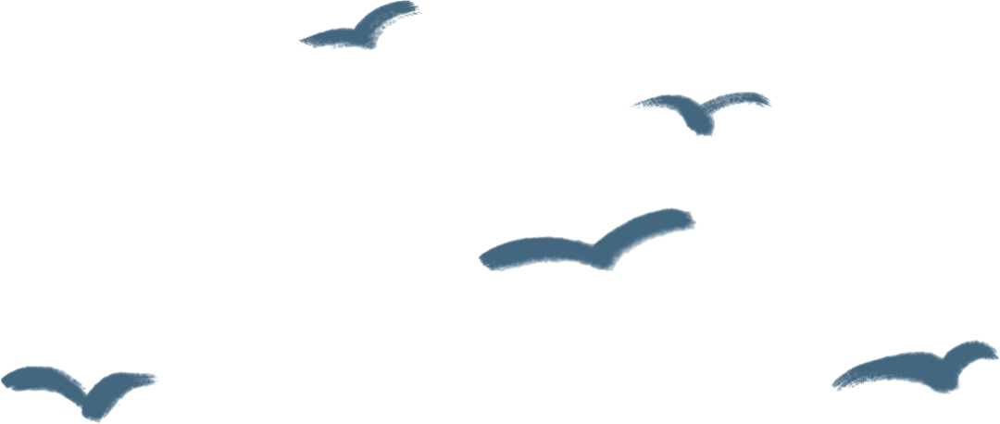
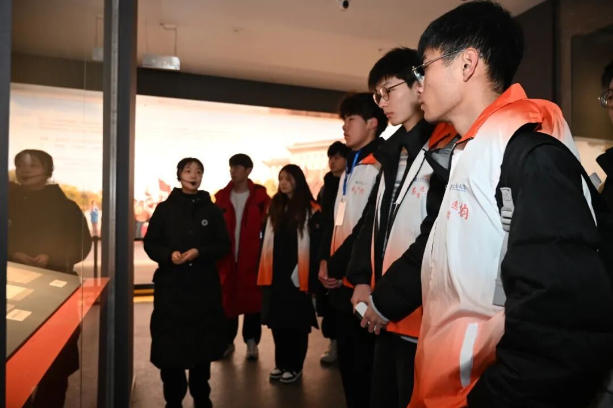
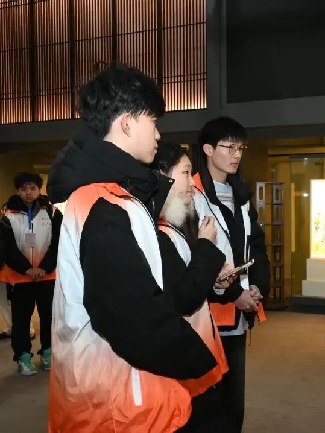
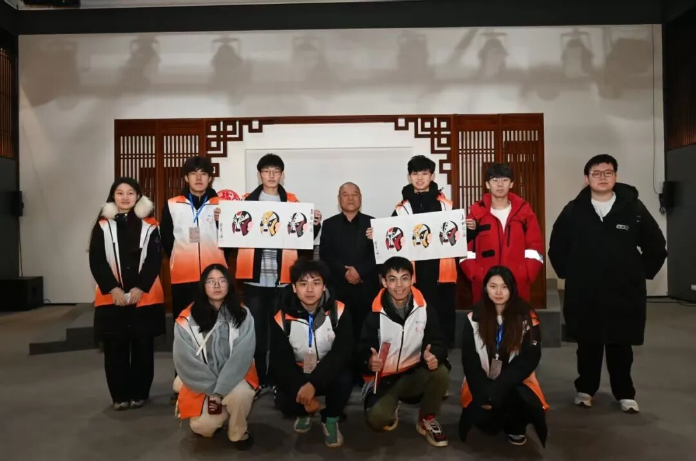
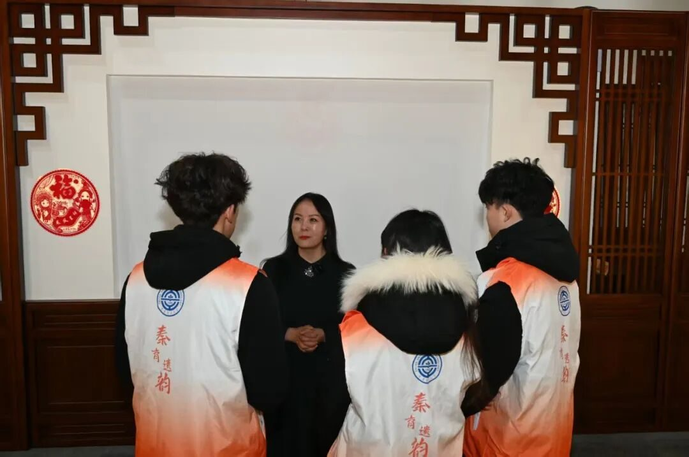
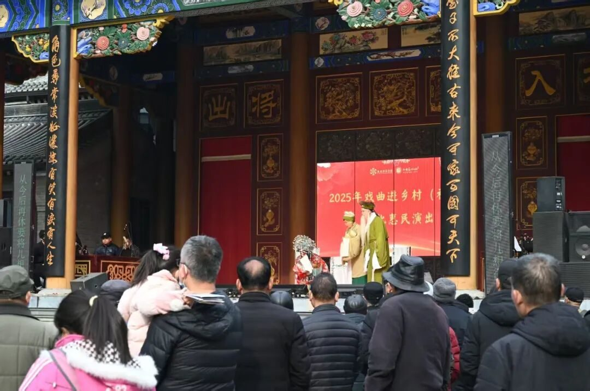

【行者无疆∙秦育遗韵】古都践梦秦腔畔，行者赓续非遗魂

古都践梦秦腔畔
行者赓续非遗魂
-Day5实践调研-


秦腔艺术，绽放经典之韵

今天，是我们实践行程的第五天，也是此次活动的收官之日。行者们满怀期待地走进了易俗社。刚踏入其中，易俗社的工作人员便带着十二分的热忱，为大家开启了易俗社博物馆的精彩讲解。
漫步在馆内，行者们无不为易俗社源远流长的深厚传统所震撼。那些陈列的老物件、珍贵的照片，仿佛在静静诉说着往昔的辉煌岁月。而提及易俗社舞台上那些出色的表演者，他们精湛绝伦的技艺更是让人由衷赞叹。而静静躺在展示台的千余本剧本，更是易俗舍跨越百年的历史缩影。

随后，在老师的引荐下，行者们有幸对四位国家一级演员，两位青年才俊进行了采访。在交流过程中，艺术家们的一言一行里，都满溢着对秦腔这门古老艺术纯粹而炽热的爱。
老师们的分享，彻底打破了外界对秦腔的刻板印象。行者们这才深刻认识到，秦腔作为一门博大精深的非物质文化遗产，远非简单的“一声吼”所能概括，而是深深扎根于群众之中，从群众的生活里汲取养分，最终又以精彩纷呈的表演回馈群众。


谈及秦腔传承，演员们满怀热忱与坚定，表示不仅会一直坚守表演舞台，用精湛技艺延续秦腔的璀璨光芒，还将投身幕后，倾尽全力培育一代又一代优秀的秦腔人才。在他们眼中，秦腔有着数百年的深厚积淀，其独特的艺术魅力而无与伦比。正因如此，老师们坚信，只要薪火相传、不懈努力，秦腔必将在新时代的舞台上绽放出更加耀眼的光彩，走进千家万户，被越来越多的人热爱、传承。

结束采访后，行者们观赏了一场精彩的秦腔表演，舞台立于广场中央，路上行人纷纷为秦腔驻足，现场的气氛异常热烈，演员们用他们独特的声音与表演技巧，勾画出一个个鲜活的角色。每一声唱腔都渗透着情感的波动，每一个动作都传递着艺术的张力，使行者们深深沉浸于故事情节中。
在十三朝古都西安，“行者无疆，秦育遗韵”实践团的探寻之旅圆满收官。这五天时光，行者们用脚步丈量这座历史名城，用心灵感受非遗文化的魅力，留下了一段段难忘且珍贵的回忆。“行者无疆”，这四个字承载着无尽的勇气与担当。他们的脚步不会因这一次的离别而停歇，未来，实践团将以更坚定的决心、更无畏的姿态，持续深耕非遗文化领域。他们会跨越山川湖海，深入每一处非遗文化的角落，挖掘、传承那些被岁月尘封的瑰宝。
做文化的行者，我们一直在路上
-END-
来源 | 行者无疆实践团
图片 | 梁棋鑫
文字 | 刘宇凯
编辑 | 郑瑞瑄
审核 | 李凌志 杩健辉
责编 | 邹靓靓